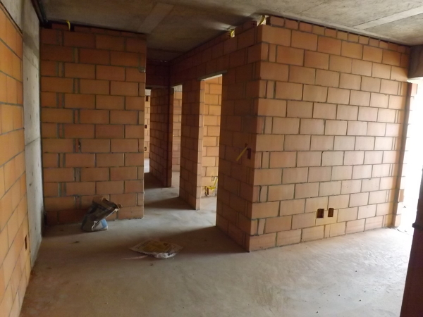

Alvenaria
A alvenaria é uma etapa essencial da construção civil, usada para levantar paredes, muros e divisórias com tijolos ou blocos unidos por argamassa. Ela pode ser de vedação, quando serve apenas pra fechar espaços, ou estrutural, quando também suporta o peso da obra. Os materiais mais comuns são tijolos cerâmicos e blocos de concreto. Um serviço bem feito garante paredes firmes, alinhadas e seguras, evitando trincas e infiltrações. Além da parte estrutural, a alvenaria também influencia no acabamento e no visual da obra, sendo fundamental para a qualidade e durabilidade da construção.